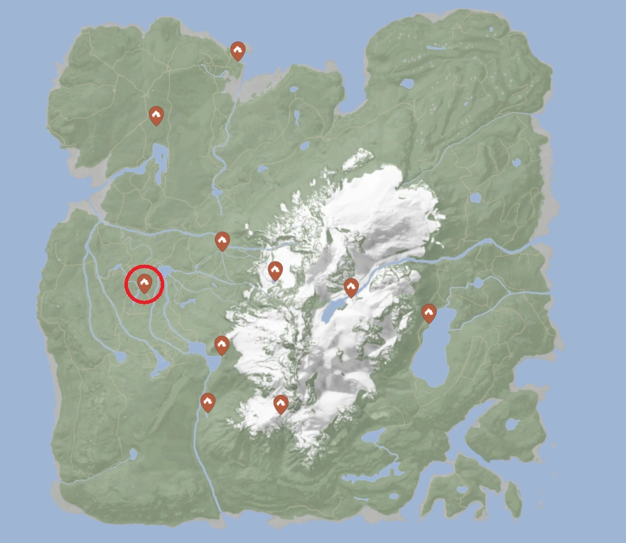
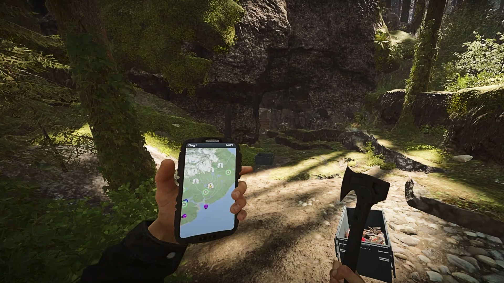

Our primary objective is to obtain a Rope-gun. Rope-gun is an essential piece of equipment allowing us to transport logs over far distances quickly. Because enemies cannot use zip lanes, they are useful in defenses, eliminating need of entry gate and allowing to fortify the perimeter of the base with traps without risks of stepping on them by accident.
Rope-gun is found in the cave, not far from our base.
 Cave of our interest poses such risks as:
| Attribute | Puffies | Fingers | Twins | Mutant Babies |
|---|---|---|---|---|
| Image | ||||
| Behavior | Blind; melee or ranged optimal; slow | Aggressive; charges frontally | Stealthy; wall climbers; loud | Weak solo; swarms in numbers |
| HP | 120 | 180 | 220 | 10 |
| Strategy | 2 headshots or 4 axe hits; stealth preferred | 6 axe hits; aim for legs, finish fast when down | 8 headshots or 20 melee hits; ranged ineffective | One melee hit each; avoid getting surrounded |
To ensure our success we must obtain first:
We will definely take some damage, to mitigate it we have medical pills with limited supply. We can craft more healing by combining Aloe Vera with Yarrow plant. We must procure those plants during our preparation stage.
We are likely to find limited supply of food on the spot, but boiled water and some cooked meats are required to avoid low stamina. Furthermore, we will have to sleep in the cave to restore stamina.